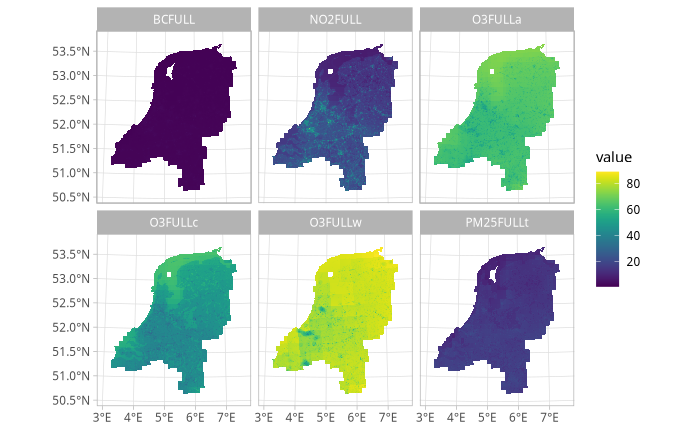

postcodElapse - Usage guide
postcodElapse.RmdPostcodElapse provides concentration estimates of the following air pollutants: PM2.5, BC, NO2 & O3. The concentration are extracted from the ELAPSE model, for this the location of a postal code is needed this is queryed from public datasets.
Setup
Preinstall
To function postcodElapse requires two extra database to be downloaded. Any of the two is fine.
- Basisregistratie Adressen en Gebouwen(BAG) by Kasaster
- Postcode6(PC6) by CBS
PC6 contains for the geographic area for all postcodes in the
Neterlands, BAG contains the location of every home in the Netherlands
and the associated postcode. PostcodElapse also needs ELAPSE to work,
which is a model of air pollution concentrations across Europe. A ELAPSE
model specifically for the Nederlands is included, you can provide your
own if you wish. See loadElapse() for more info.
Install
There exist pre compiled packages for Linux & Windows. On GitHub head to the releases, download the version for your OS. Install using the command below.
# Linux
install.packages("./postcodElapse_0.0.0.9610_R_x86_64-pc-linux-gnu.tar.gz")
# Windows
install.packages("./postcodElapse_0.0.0.9610-pc-ms-win11.zip")Usage
Air pollution
The main functionality of postcodElapse is easy to use just call
postcodElapse() with an postcode and the path to the
database you want to use, lets use the Rijksmuseum’s postal address.
library(postcodElapse)
postcodElapse("1071XX", "./cbs_pc6_2024.gpkg")
#> Guessed db type to be: PC6
#> postcode n BCFULL_avg NO2FULL_avg O3FULLa_avg O3FULLc_avg O3FULLw_avg
#> 1 1071XX NA 2.179973 39.33374 52.47449 36.59031 61.37251
#> PM25FULLt_avg BCFULL_min NO2FULL_min O3FULLa_min O3FULLc_min O3FULLw_min
#> 1 17.72366 2.179973 39.33374 52.47449 36.59031 61.37251
#> PM25FULLt_min BCFULL_max NO2FULL_max O3FULLa_max O3FULLc_max O3FULLw_max
#> 1 17.72366 2.179973 39.33374 52.47449 36.59031 61.37251
#> PM25FULLt_max
#> 1 17.72366The func automatically detects which DB you are using, and does the heavy lifting. It looks up the geographic data of the postcodes in the BAG or PC6. Then uses that data to extract the mean, maximum & minimum air pollution estimates for that postcode from ELAPSE. In addition to counting the amount of homes in that postcode.
Geographic data
If you wish to plot geographic data like ELAPSE itself it is recommended to install the following packages: tidyverse, tidyterra. With these you can plot figures using the geographic data postcodElapse produces.
ELAPSE
Lets plot ELAPSE itself see the snippet below.
library(tidyverse)
library(tidyterra)
# You can give the path to your own ELAPSE model expected as a singular .tif
# conaining all layers. When no path is given then the internal is loaded.
elapse <- loadElapse()
ggplot() +
geom_spatraster(data = elapse) + # Use subset "$" to plot a specific layer.
scale_fill_grass_c() +
facet_wrap(~ lyr) # plot all layers in an facet
At the beginning of this document I said that ELAPSE only has four layers, we plotted six. Ozone (O3) is split in O3FULLa, O3FULLc & O3FULLw. O3 is produced as an result of chemical reaction between NO2 and VOCs powered by sunlight. Consequently the seasons affect O3 concentrations to account for this O3 is split across average(a), cold(c) & warm(w) layers.